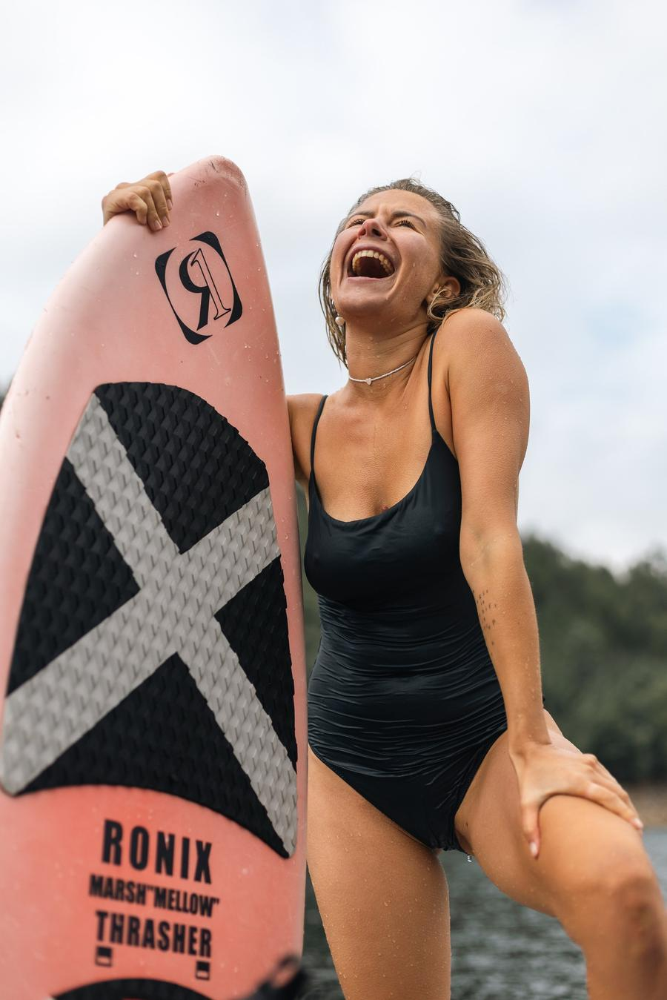

Softpower
Autumn Gathering
vol 6
this year's theme — pleasure
5–8 November 2026
Zab Living · Central Portugal
4 days 3 nights · Thursday to Sunday
only 7 spots · first come, first served
this one's all about
pleasure
this gathering is about pleasure. not as a reward for the work, but as the reason for it. all the practice, all the discipline, all the breathing — it's so you can actually feel good in your body. four days of asking what that means for you
hills, fog,
a lake between
the mountains
a different portugal — not the ocean, not lisbon. green hills that hold the mist until noon, water the colour of pine, eucalyptus in the air on every trail
november here is still warm enough to swim and already cool enough to hike. the light is long and low. everything is ripe
imagine
a house
on the lake
- morning mist, birds singing, the smell of pines
- oranges off the tree, grapes straight off the vine
- warm bread, long lunches, fire at night
- a small group of people you feel comfortable with
- a space where you can simply exhale and be
- u will enjoy, i promise))
04
the invitation
i'm inviting you
into this cool
exploration
where step by step, together, we feed the body, relax it, relax your nervous system
nothing here is about pushing through. we go slowly, we go deep, and we let the body set the pace
05
why yoga here
to feel
your own body
better
the practice is the instrument. these are the questions it helps you ask:
what gives it pleasure
and what it doesn't like
what drains your energy
and what fills it
where you hold tension
and where you can let go
when the body wants rest
and when it wants to move
what is enough for you
and what is already too much
06
7 genuinely
resonant people —
a team
a deliberately small group creates a container of safety, ease and real connection — the kind of seven that feels like a team from the first evening
entry
entry only
through an interview
a vibe check with everyone before i say yes. it matters to me that this feels like a team. with just seven people:
- every practice can be adjusted to you
- there's abundant personal space to process and integrate
- sharing happens organically, without pressure or performance
- quiet moments are honoured as part of the experience
- you're free to be fully yourself — joining everything, or taking time alone
08
an abundant
program
full and generous — and still enough space around it to be with yourself, reset, rest
the nap is on the schedule. so is doing nothing at all
quiet
digital detox
recommended
for all days of the program. not a rule — an invitation
creating space away from daily demands is what lets the nervous system actually reset
10
the place
zab living
one of my favourite hotels in portugal, 1 hour 40 minutes from lisbon. a house on the lake, in the middle of nothing
a view of the stunning lake from every room
11
water
wakesurf, sup,
a lot of swimming
connect with water's flowing energy while building balance, presence and playful joy
from your room to the lake — a one minute walk down the hill
12
taste
grapes straight
off the vine
a trip to the vineyard, oranges off the tree, warm bread, long lunches. everything cooked on site, from local produce, every day
pleasure starts with what you put in your mouth
13
mindful practices
yoga, pranayama,
breath,
deep practices
daily practices to align body and breath, creating the foundation for mental stillness and physical vitality
morning and evening, in your own rhythm
14

and also
a lot of fun,
lightness
and vitality
breathing, moving and living with renewed joy
15
retreat flow
4 days 3 nights
thursday 5 · arrival
- welcome to zab living, settle into your room
- evening practice to ground after travel
- opening circle to set intentions
- light dinner together
friday 6 · energising
- morning yoga and pranayama
- nourishing breakfast
- sup / wakesurf on the lake
- nap (our favourite)
- evening practice, shared dinner
saturday 7 · tasting
- morning practice focused on pranayama
- breakfast, then a guided hike
- the vineyard
- free time for reflection
- evening practice, long fireside dinner
sunday 8 · carrying forward
- final practice integrating the retreat
- farewell breakfast
- wakesurf maybe
- closing circle, departure with tools to keep the practice going
16
practical details
1290–1390€
if you've been on a retreat with me before*
1390–1490€
if this is your first one*
* depending on the room you choose · 50% deposit secures your place
what's included
3 nights at zab living · 6+ guided yoga, pranayama and breath sessions · guided hiking · the vineyard trip · sup & wakesurf with equipment · all breakfasts, lunches and one family-style dinner · a vibe check with dasha before the trip · a curated playlist to continue your practice
not included: two dinners, an additional wakesurf session (60€), transfers from/to lisbon (price on request)
17
questions
or doubts?
just ask me
i'll tell you honestly whether this one is for you
t.me/beloved_dasha
softpowerspace.com